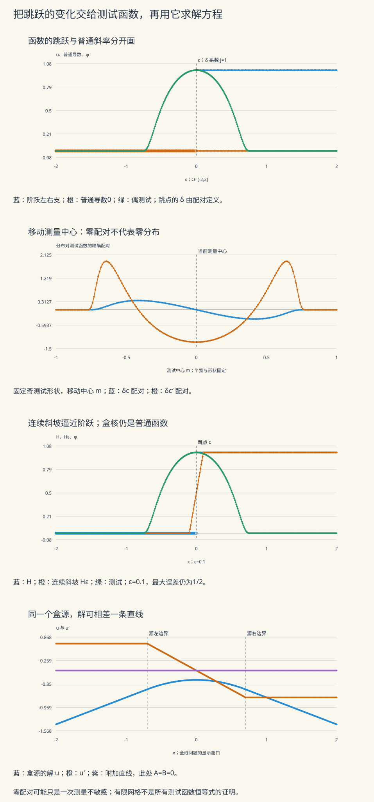

本页目录
现代 PDE I · 分布与弱导数
一个函数在跳点之外的导数都是零，为什么整体仍然留下一个点源？本页从这一个问题出发，把“求导”改写为可以检验的积分恒等式，再用它处理尖角、平滑近似和 Poisson 方程。前置：测度与积分、本科的分部积分与线性泛函；后续是 Sobolev 空间。
学习层：改变测试函数，找出遗漏的项
把测试函数理解成一种带权测量：它规定在哪一小片区域看、怎样把不同位置的贡献相加。一次测量为零，可以是对象不存在，也可以是这次测量恰好不敏感。分布理论要求对所有允许的测试函数作出一致回答。
| 实验 | 先作的判断 | 可以验证什么 |
|---|---|---|
| 跳跃与尖角 | 一阶、二阶各会出现什么点源？ | 普通积分和点源配对是否一起闭合 |
| 盒核逼近 | 曲线越来越像，就在每种范数下都接近吗？ | 配对、总面积误差、最大误差的区别 |
| Poisson 盒源 | 找到一个解，是否已经确定唯一解？ | 内部接口与外部条件分别约束什么 |
实验统一取开区间 Ω=(-2,2)。测试函数支集位于 [m−r,m+r]，|m|≤1、0.2≤r≤0.8，因此它与外边界始终有正距离。内部跳点仍然必须保留。
无脚本参考账本
默认阶跃 H(x)；测试函数是中心0、半宽0.8、峰值1的偶 bump；每个实际分段使用128个 Simpson 子区间。盒核例取半宽0.1；Poisson 例取中心0、半宽0.7的单位盒源，不加仿射项。表中数值积分与解析配对分别标明。
| 量 | 数值 | 类型 |
|---|---|---|
| 阶跃：φ(0) | 1 | 解析测试值 |
| 阶跃：∫Hφ′ | -1 | 有限 Simpson 积分 |
| 阶跃：−δ₀(φ) | -1 | 解析配对 |
| 阶跃：一阶有符号残差 | 9.70223901e-13 | 有限积分减解析值 |
| 盒核：δε(φ) | 0.994767162 | 有限 Simpson 积分 |
| 盒核：Hε 的 L1 误差 | 0.05 | 解析 ε/2 |
| 盒核：Hε 的 L2 误差 | 0.129099445 | 解析 √(ε/6) |
| 盒核：Hε 的 L∞ 误差 | 0.5 | 解析，不随 ε 缩小 |
| Poisson：−∫uφ″ | 0.964185319 | 有限 Simpson 积分 |
| Poisson：∫fφ | 0.964185317 | 有限 Simpson 积分 |
| Poisson：右斜率减左斜率 | -1.4 | 解析，等于总源质量的负值 |
有限积分残差是当前网格的诊断。正文的分段分部积分才说明恒等式为何对所有测试函数成立。

1 · 先用分部积分算出跳跃
令 \(H(x)=0\) 当 \(x<0\)，\(H(x)=1\) 当 \(x\ge0\)。在零点的代表值可以改变，不影响下面任何 Lebesgue 积分。取光滑且紧支集的 \(\varphi\)，则
右侧只需要测试函数在零点的值。我们把这一作用记作 \(\langle\delta_0,\varphi\rangle=\varphi(0)\)，于是 \(DH=\delta_0\)。若只记住 \(H'=0\) 几乎处处，就丢掉了穿过跳点的那一份变化。
一般地，设 \(u\) 在有限多个点 \(c_j\) 处分段 \(C^1\)，并且左右迹存在，各段普通导数局部可积。逐段积分时，相邻两段在 \(c_j\) 的边界项分别带来 \(u(c_j-)\varphi(c_j)\) 与 \(-u(c_j+)\varphi(c_j)\)。因此
同一结论也适用于各闭子区间上绝对连续、且上述迹和积分有意义的分段函数。外边界项因测试函数在边界附近恒为零而消失；内部边界项没有这个理由。
实验选用一个可以同时包含斜率、尖角与跳跃的族：
这里 \(\operatorname{sign}\) 的跳幅是 \(2\)，所以尖角系数 \(K\) 在二阶产生 \(2K\delta_c\)；跳跃项再次求导则产生 \(\delta_c'\)，其配对是 \(-\varphi'(c)\)，不是 \(\varphi'(c)\)。
2 · 测试函数究竟要求什么
对开集 \(\Omega\subset\mathbb R^d\)，定义
下标 \(c\) 不仅说函数在远处为零，还要求其支集——非零集合的闭包——是完全包含在 \(\Omega\) 内的紧集。例如支集恰为 \([-1,1]\) 的 bump 属于 \(\mathcal D((-2,2))\)，却不属于 \(\mathcal D((-1,1))\)。
测试函数序列 \(\varphi_n\to0\) 的含义是：存在同一个紧集 \(K\Subset\Omega\) 包含所有支集，而且对每个多重指标 \(\alpha\)，
只看函数值趋于零还不够。导数也必须受控，否则把导数转交给测试函数后，“小输入”可能变成很大的变化。
分布是 \(\mathcal D(\Omega)\) 上的连续线性泛函，记作 \(T\in\mathcal D'(\Omega)\)。一个具体可用的等价连续性条件是：对每个 \(K\Subset\Omega\)，存在 \(C_K<\infty\) 与有限整数 \(m_K\)，使支集位于 \(K\) 的所有测试函数满足
允许的阶数可以随紧集变化。这个条件排除了不连续的线性泛函；“线性”本身还不是分布的完整定义。测试函数的收敛、分布求导与光滑因子乘法的约定，可与 NIST DLMF §1.16 对照。
实验实际使用
三支测试分别为 \(B(z)\)、\(B(z)(1+z/2)\)、\(zB(z)\)。指数衰减快过端点处产生的任何有限次有理幂，因此延拓后各阶导数都连续且在端点为零；峰值归一化 \(B(0)=1\) 并不表示积分为1。
令 \(p(z)=a+bz\)、\(q=1-z^2\)。内部用于复算的导数是
取奇测试并令 \(m=c\)，得到 \(\varphi(c)=0\)、\(\varphi'(c)=1/r\)。此时 \(J\delta_c\) 完全测不到，而 \(J\delta_c'\) 的配对为 \(-J/r\)。把测试中心移开，就能让先前消失的 \(\delta_c\) 配对重新出现。
3 · 普通函数、点质量与分布运算
若 \(f\in L^1_{\rm loc}(\Omega)\)，它定义
局部有限的 Radon 测度同样通过积分定义分布。连续性要求只作用在紧支集上，所以不需要全空间的质量有限。普通函数相差一个零测集时定义同一分布。
为什么 \(\delta_c\) 不能由某个 \(L^1_{\rm loc}\) 函数表示？假设 \(\delta_c=T_f\)。选择 \(0\le\psi\le1\)、\(\psi(0)=1\) 的紧支集光滑函数，令 \(\psi_\varepsilon(x)=\psi((x-c)/\varepsilon)\)，并把支集取在 \(\Omega\) 内。则
最后一步用的是可积函数积分的绝对连续性，矛盾。这里并没有声称 \(\psi_\varepsilon\to0\) 于测试函数拓扑：它在 \(c\) 的值一直是1，导数还会增大。
分布导数直接定义为
右侧仍是连续线性泛函，所以每个分布都能求任意阶分布导数；这不表示它能逐点求导，也不表示导数仍是普通函数。不同方向的分布导数可交换，因为测试函数的混合偏导可交换。
光滑函数 \(a\) 与分布的乘法定义为 \(\langle aT,\varphi\rangle=\langle T,a\varphi\rangle\)，因为 \(a\varphi\) 仍是测试函数。由一次展开可得
例如 \(x\delta_0'=-\delta_0\)。若 \(T\) 是任意阶分布，一般要用 \(C^\infty\) 因子；只有已经知道更低阶结构时，才可能降低乘数的正则性。不能把普通函数的乘法规则不加条件地套在两个分布上。盒核的平方就给出警示：
当 \(\varphi(c)>0\)，右侧发散。因此这种最直接的近似没有给出 \(\delta_c^2\) 的分布极限；额外的正则化规则是额外结构，不能当成一般分布理论已有的乘法。
4 · 弱导数：求导后仍是可积函数
设 \(u,v\in L^1_{\rm loc}(\Omega)\)。如果对所有测试函数都有
就称 \(v\) 为 \(u\) 的弱导数 \(D^\alpha u\)。这比“存在分布导数”多要求了导数能够由局部可积函数表示。本页采用这一常见约定。
| 对象 | 一阶分布导数 | 二阶分布导数 | 弱导数的结论 |
|---|---|---|---|
| \(H\) | \(\delta_0\) | \(\delta_0'\) | 无一阶 \(L^1_{\rm loc}\) 弱导数 |
| \(\lvert x\rvert\) | \(\operatorname{sign}(x)\) | \(2\delta_0\) | 有一阶，无二阶 \(L^1_{\rm loc}\) 弱导数 |
| \(\max(x,0)\) | \(H\) | \(\delta_0\) | 有一阶，无二阶 \(L^1_{\rm loc}\) 弱导数 |
ReLU 在每个有界区间属于 \(W^{1,p}\)，\(1\le p\le\infty\)；在整条实线上它本身不属于这些 \(L^p\) 空间，包括 \(L^\infty\)，所以不能省略定义域写成全局 \(W^{1,p}(\mathbb R)\)。
弱导数只在几乎处处意义下唯一。证明所用的基本事实是：若 \(g\in L^1_{\rm loc}\) 对全部测试函数积分为零，则把测试取为任一点附近的磨光核，得到 \(g\) 的局部磨光恒为零；在 Lebesgue 点令核半径趋零，就有 \(g=0\) 几乎处处。将它用于两个候选弱导数之差即可。
弱求导还具有有用的闭性：若 \(u_n\to u\)、\(Du_n\to v\) 都在 \(L^1_{\rm loc}\) 收敛，那么对固定测试函数可在 \(\int u_n\varphi'=-\int Du_n\varphi\) 两侧取极限，得到 \(Du=v\)。只让导数列收敛而不控制原函数列，不足以指定它属于哪个函数。
对 \(u\in W^{1,1}_{\rm loc}\) 与 \(a\in C^1\)，乘积法则仍成立。可在每个相关紧集附近用光滑 \(a_n\) 逼近 \(a\) 及 \(a'\)，先用光滑乘数公式，再利用上述积分极限；这与“任意分布都能乘任意 \(C^1\) 函数”是不同命题。
5 · 逼近的方式必须写清
分布收敛 \(T_n\to T\) 表示：对每一支固定测试函数 \(\varphi\)，\(\langle T_n,\varphi\rangle\to\langle T,\varphi\rangle\)。用盒核作变量替换：
对称性消掉一阶 Taylor 项，并给出可直接证明的界
这不是对所有测试函数统一的绝对误差常数：右侧依赖这支测试的二阶导数。盒核导数的配对同时满足
实验把这个精确边界表达式与 \(-\int\delta_\varepsilon\varphi'\) 的数值积分并列，方便分别辨认逼近误差与积分误差。
盒核卷积阶跃给出
它连续且分段线性，并不是 \(C^\infty\)。对 \(1\le p<\infty\)，将左右两个三角形的误差分别积分：
因此 \(L^1\) 误差为 \(\varepsilon/2\)，\(L^2\) 误差为 \(\sqrt{\varepsilon/6}\)，都趋于零；但本质上确界误差一直为 \(1/2\)。这不是单个点造成的：任意接近 \(1/2\) 的偏差，都发生在跳点旁边正测度的小区间上。
盒核本身的 \(L^1\) 范数始终为1，\(L^2\) 与 \(L^\infty\) 范数分别为 \((2\varepsilon)^{-1/2}\) 与 \((2\varepsilon)^{-1}\)。它不能在 \(L^1\) 中收敛到一个函数，否则该函数也应代表 \(\delta_c\)，与前面的证明矛盾。
真正的光滑磨光核可以取 \(\eta=B/\int B\)，再令 \(\eta_\varepsilon(x)=\varepsilon^{-d}\eta(x/\varepsilon)\)；在多维使用相应的径向 bump。若只在 \(\Omega\) 内给定 \(u\)，先限制到 \(\Omega_\varepsilon=\{x:\operatorname{dist}(x,\partial\Omega)>\varepsilon\}\)，才能直接写不涉及外部数据的卷积。对 \(u\in W^{1,p}_{\rm loc}\)、\(1\le p<\infty\)，
求导交换来自把核的 \(x\) 导数改成负的 \(y\) 导数，再使用弱导数定义；收敛来自局部 \(L^p\) 的近似单位元性质。原域的边界条件不会由内部磨光自动保留。关于有限 \(p\) 与局部定义域的准确范围，可参阅 Hunter《PDE》§1.9、§3.4。
不能把此结论直接扩展成 \(p=\infty\) 的强范数收敛：取偶、非负、质量1的光滑核，平滑后的阶跃在跳点取值 \(1/2\)，左右连续性使其 \(L^\infty\) 误差至少为 \(1/2\)。对 ReLU 而言，函数本身可局部一致逼近，但其导数 \(H\) 仍有这个障碍。
6 · 从点源构造一维方程的解
既然 \(D^2|x|=2\delta_0\)，算子 \(-D^2\) 的一个基本解是
若 \(f\in L^1(\mathbb R)\) 且有紧支集，则
对每个有限 \(x\) 都有定义。更一般的充分条件是 \(\int(1+|y|)|f(y)|\,dy<\infty\)。对任意测试函数，绝对可积性允许交换积分：
于是 \(-u_p''=f\)。这个证明没有要求 \(f\) 自己光滑。
实验取单位盒源 \(f=\mathbf1_{[c-a,c+a)}\)。令 \(z=x-c\)，将积分在 \(y=x\) 处分开，得到
在两个接口，函数值都是 \(-a^2\)；左接口两侧斜率都是 \(a\)，右接口两侧都是 \(-a\)。所以 \(u_p'\) 没有跳跃，\(u_p''\) 不额外带 \(\delta\)。总源质量与斜率变化也符合
所有 \(u_p+Ax+B\) 都满足相同方程。反过来，在全直线上若两个分布解之差 \(w\) 满足 \(w''=0\)，它就一定是仿射函数：先证明 \(T'=0\) 蕴含 \(T\) 为常数分布。任取积分为零的测试 \(\varphi\)，其原函数 \(\psi(x)=\int_{-\infty}^x\varphi(t)dt\) 仍紧支集，故 \(\langle T,\varphi\rangle=-\langle T',\psi\rangle=0\)。再用一支积分为1的测试分解任意 \(\varphi\)，得到 \(T\) 只依赖 \(\int\varphi\)。两次应用便得 \(w=Ax+B\)。
7 · 二维与三维基本解：符号由内球面决定
现在取算子 \(\Delta\)，而不是上一节的 \(-\Delta\)。对应的两个函数是
它们在原点附近局部可积，并在原点外满足 \(\Delta E_d=0\)。想计算分布拉普拉斯，取测试 \(\varphi\)，选大球包含其支集，并挖去半径 \(\varepsilon\) 的小球。在剩余区域上应用 Green 第二恒等式：
大球边界附近 \(\varphi\) 及其导数为零。小球面是挖孔区域的内边界，其向外法向是 \(-\mathbf e_r\)，这正是第一项负号与第二项正号的来源。
第一项的绝对值在二维不超过常数乘 \(\varepsilon|\log\varepsilon|\)，在三维不超过常数乘 \(\varepsilon\)，都趋于零。第二项则是球面平均值，因为
于是第二项趋于 \(\varphi(0)\)。恢复被挖去的小球体积分时，局部可积性保证其贡献趋零，最终得到
对于 \(-\Delta\)，基本解的符号应整体反转。若 \(f\in C_c^\infty(\mathbb R^d)\)，\(u=E_d*f\) 便满足 \(\Delta u=f\)；一般域的边界条件还需另行处理，自由空间基本解不等于已经满足该域边界条件的 Green 函数。
8 · 练习：把符号、条件与反例一起写全
练习1：求 D²|x−c|，并算 a(x)δc′；为什么不能把 a 直接换成 a(c)？
分段求一次导数得到 \(\operatorname{sign}(x-c)\)。它在 \(c\) 的跳幅为 \(1-(-1)=2\)，所以 \(D^2|x-c|=2\delta_c\)。对光滑 \(a\)，
即 \(a\delta_c'=a(c)\delta_c'-a'(c)\delta_c\)。额外项来自求导也作用在乘数上。取 \(a(x)=x-c\)，第一项为零，第二项为 \(-\delta_c\)，因此把乘数直接换成点值会给出错误答案0。
练习2：奇测试在跳点的配对为零，是否证明 DH=0？怎样设计下一次测试？
令 \(\varphi(x)=zB(z)\)、\(z=(x-c)/r\)。其 \(\varphi(c)=0\)，所以 \(\langle DH(\cdot-c),\varphi\rangle=0\)。但换成偶测试 \(\psi(x)=B((x-c)/r)\)，就有 \(\psi(c)=1\)，因此配对为1。两支测试已经足以否定 \(DH=0\)；证明 \(DH=\delta_c\) 仍须对任意测试作分部积分。
同时，第一支奇测试满足 \(\varphi'(c)=1/r\)，故 \(\langle\delta_c',\varphi\rangle=-1/r\)。同一支测试可以测不到 \(\delta_c\)，却测得到它的导数。
练习3：ε 从0.1减到0.025，Hε 的三种误差怎样变化？盒核能在 L¹ 中趋于 δ 吗？
半宽缩小到四分之一，因此 \(L^1\) 误差从 \(0.05\) 变成 \(0.0125\)，\(L^2\) 误差从 \(\sqrt{0.1/6}\) 变成其一半，\(L^\infty\) 误差仍为 \(1/2\)。这些范数是对误差函数计算的；不要与盒核本身的范数混淆。
若盒核在 \(L^1\) 中收敛到某个 \(g\)，则对每个有界测试 \(\varphi\)， \(|\int(\delta_\varepsilon-g)\varphi|\le\|\delta_\varepsilon-g\|_1\|\varphi\|_\infty\to0\)。 另一方面盒核分布收敛到 \(\delta_c\)，于是 \(T_g=\delta_c\)，与 \(\delta_c\) 不是局部可积函数的证明矛盾。分布收敛成立，\(L^1\) 函数空间内的收敛不成立。
练习4：单位盒源为什么不在源边缘额外产生 δ？加 Ax+B 后，又怎样验证同一个方程？
在 \(z=-a\)，内部与外部函数值均为 \(-a^2\)，导数均为 \(a\)；在 \(z=a\)，函数值均为 \(-a^2\)，导数均为 \(-a\)。一阶求导没有函数跳跃项，二阶求导没有导数跳跃项，故只有正则部分 \(u_p''=-f\)。
加仿射项后，对每支紧支集测试，
因为两次分部积分的外边界项为零，且 \((Ax+B)''=0\)。所以 \(-\int(u_p+Ax+B)\varphi''=\int f\varphi\)。若要从这些解中选择一个，必须给出额外条件；仅展示一条画得平滑的曲线不够。
下一页将“函数与若干阶弱导数都具有可积性”组织成 Sobolev 空间，进一步讨论嵌入、迹与弱解。这里先保留最关键的习惯：写清定义域、测试函数、积分身份和所用的收敛方式。